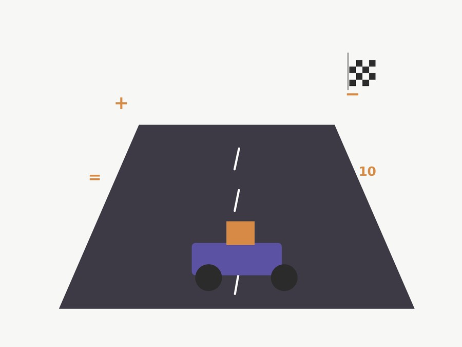

Illustrative graphic, not an actual screenshot.
A 2D educational game for 1st and 2nd graders, built with a three-person team in a software engineering class using Agile. The concept: answering math questions correctly is literally what powers your kart forward.
Players face randomized addition/subtraction and place-value questions with three multiple-choice answers. A correct answer lets the kart move forward on the next click; a wrong answer costs a life. Reach 10 correct answers before running out of lives to win. I worked on the game-loop and scoring logic (question generation, answer tracking, win/lose routing) alongside the driving mechanic that ties kart movement to answer correctness.
Built with two teammates (the repository is hosted under a teammate's GitHub account). Team reflection from our README: "We learned that the importance of communication when building an app together is crucial."
Built in Unity with C#, using Rigidbody2D physics for kart movement. The core loop ties a question-and-answer manager to the movement script: a correct multiple-choice answer flips a flag that the kart controller reads on the next click to apply forward force; a wrong answer decrements the life counter and routes to a retry/game-over state once lives hit zero. The repository lives under a teammate's GitHub account, so there's no direct source excerpt here — the description above reflects the game-loop and scoring logic I was responsible for within the team.
Coursework project — Bachelor of Science, Computer Information Systems & Finance — Westminster College